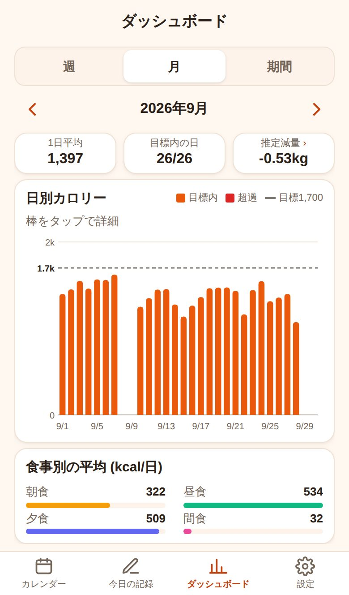

こんなこと、ありませんか？
食事の記録は、続けるのがいちばん難しい。よくあるつまずきはこの3つです。
思い出せない
夜になると、朝と昼に何を食べたか曖昧に。記録がとびとびになってしまう。
計算が面倒
毎回カロリーを調べて足し算するのが負担で、3日で挫折。
成果が見えない
がんばっているのに、体重が変わるまで手応えがなくて続かない。
ごはん食べた なら、ぜんぶ1画面で。
スマホの1画面に収まるように作っています。スクロールせずに、タブとスワイプで切り替え。
朝・昼・晩・間食を、タップで記録
よく食べるものはボタンひとつでカロリーごと入力。料理名とカロリーを自分で入れることも、写真やメモを残すこともできます。
- その日の合計と目標までの残りをひと目で
- 写真は自動で軽くして保存
- 左右スワイプで食事を切り替え
1か月の食事が、カレンダーでひと目に
日ごとの合計カロリーと、記録した食事・運動の印が並びます。目標を超えた日は赤字で表示。

週・月で振り返り、「あと何kg」の目安も
1日平均や目標内の日数、日別のグラフで傾向がわかります。年齢・身長・体重から基礎代謝を推定し、食事と運動の差から減量の目安を計算します。
Apple Watch の消費カロリー
iPhoneのショートカットで、アクティブカロリーを運動記録に取り込めます。
機種変更しても安心
ログインすると記録はクラウドに保存。複数の端末でも同じ記録が見られます。
電波がなくても記録できる
オフラインでも使えて、つながったときに自動で保存されます。
ダークモード対応
夜でもまぶしくない配色に、端末の設定に合わせて自動で切り替わります。
はじめかた
アプリストアからのインストールは不要です。
ブラウザで開く
このページの「無料ではじめる」をタップ。
ホーム画面に追加
iPhoneは共有ボタン、Androidはメニューから「ホーム画面に追加」。
ログインして記録
Googleまたはメールでログイン。ログインせずに使うこともできます。
よくある質問
料金はかかりますか？
無料で使えます。運営費は、アプリ内やこのページに表示する広告でまかなっています。
ログインしないと使えませんか？
ログインせずに使えます。その場合、記録はお使いの端末の中だけに保存されます。機種変更や複数端末で使いたい場合はログインしてください。
記録はどこに保存されますか？
ログインすると、Google の Firebase（クラウド）にあなたのアカウント専用で保存されます。ほかの人が見ることはできません。詳しくはプライバシーポリシーをご覧ください。
Android でも使えますか？
使えます。Chrome で開いて「ホーム画面に追加」してください。Apple Watch 連携のみ iPhone 限定です。
カロリーは正確ですか？
よく食べるもののカロリーや推定減量は一般的な目安です。医療や厳密な栄養管理が必要な場合は専門家にご相談ください。